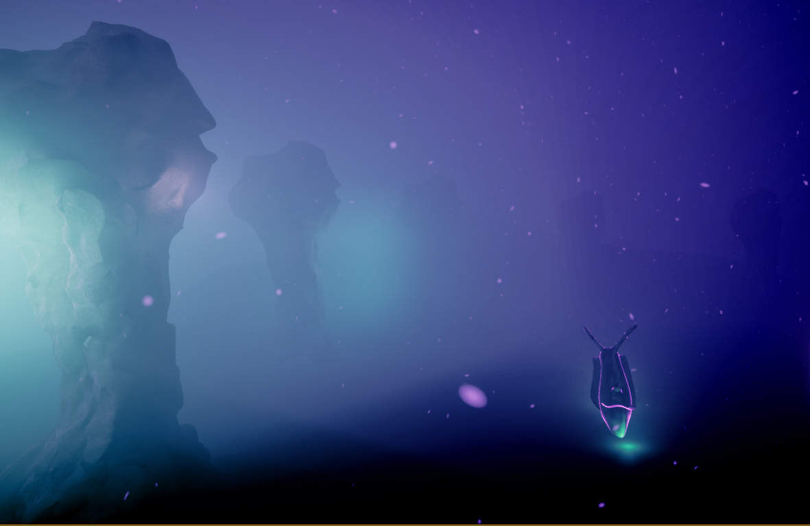
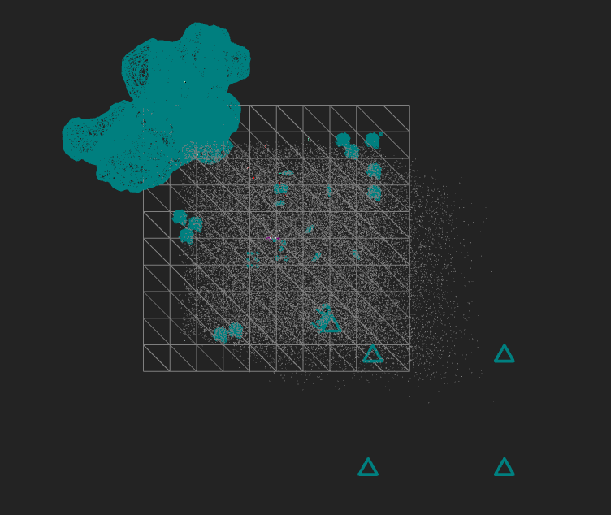
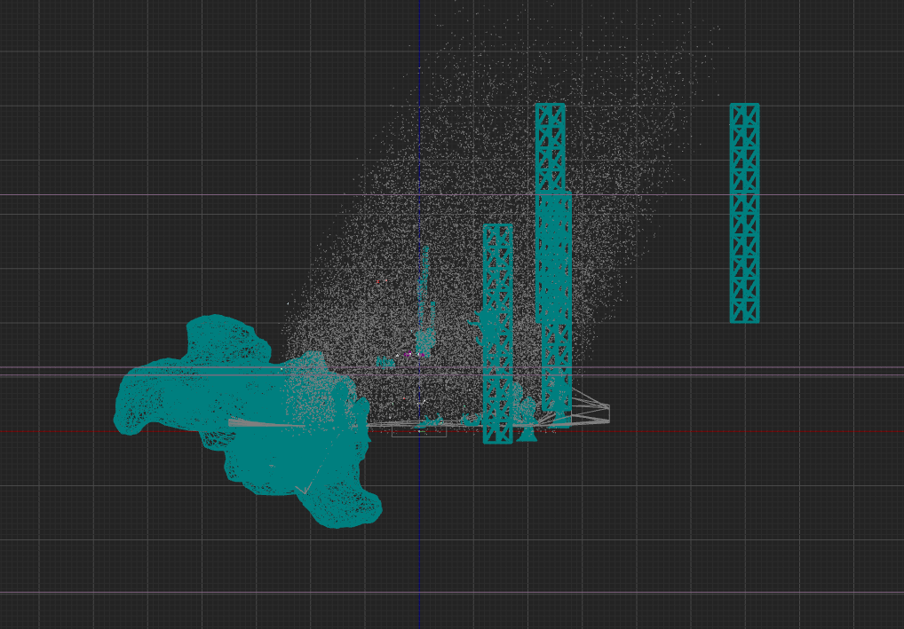
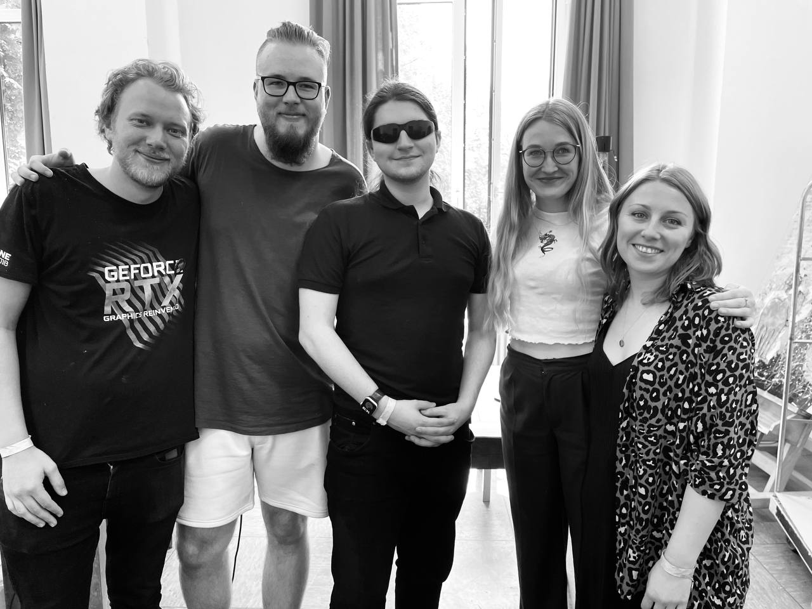
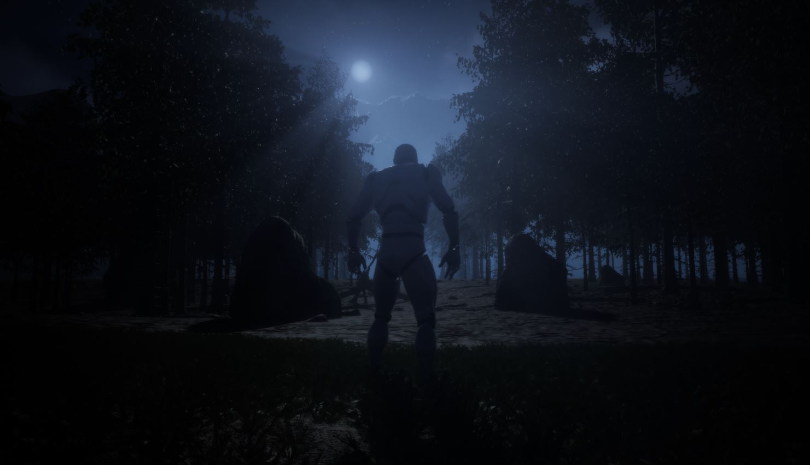
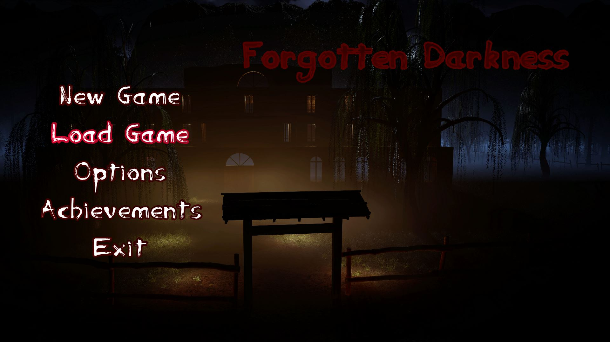
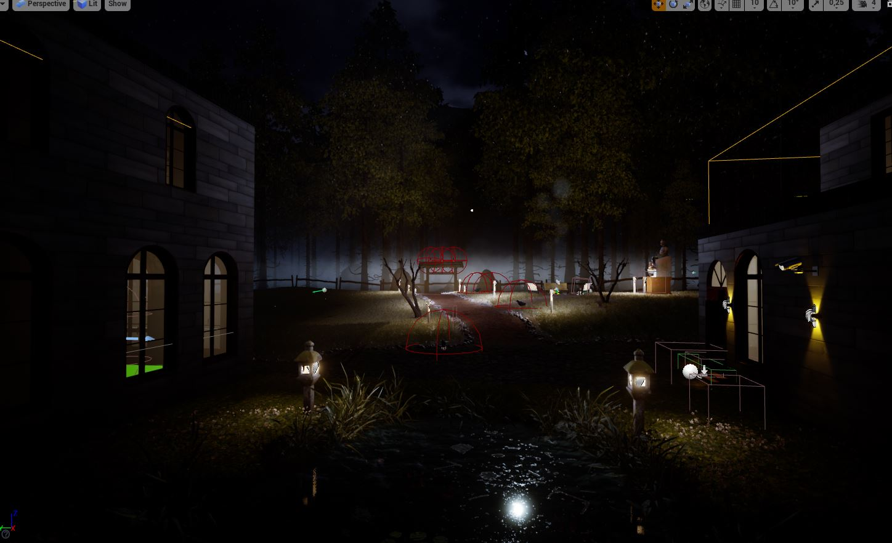

Das in den letzten 24 Stunden entstandenen Projekt
META VIEW ist eine neue
Art das Metaverse ins Planetarium zu bringen.
Das Head Mounted Display wird als ein
immersives und interaktives Präsentationstool genutzt ,
um die Kuppel zu bespielen.
Dies ermöglicht es den Reiseführenden und das Publikum
gemeinsam in ein Metaverse einzutauchen.
In der ersten Episode schwimmen wir inmitten von Partikeln,
die wir leicht
wahrnehmen können.
Wir befinden uns in Dimensionen, die wir uns nicht
vorstellen können, um Geschichten zu erzählen über was real ist
und was
möglich ist und was es bedeuten könnte Unterwasser zu leben.
FINAL ART

FINAL ARTDas Modeling der 3D Objekte haben wir in Blender umgesetzt und in
Substance Painter texturiert, um es wiederum in Blender zu Baken.
Von da aus ging die Pipeline in die Unreal Engine, um dort das finale Shading,
inklusive animierte Effekte zu erzeugen. Die Interaktionen haben wir ebenfalls
in der Engine erzeugt. Anschließend gab das Post Processing den finale Schliff.
Die präsentierende Person benutzt ein Head-Mounted-Display (HTC-Vive), um das
Publikum durch das Metaverse zu begleiten. Die Zuschauenden befinden sich in einer
Bubble im Metaverse und können in beliebige Richtungen mitgenommen werden.

TOP VIEW

SIDE VIEW
Das TEAM
Finn Lichtenberg / Visual-Coder / 3D-Artist
Vesela Stanoeva / Storytelling / Sound Designerin
Elisa Drache / 3D-Artist / Grading Post Processing
Ali / Sound Designer / 3D-Artist
Michael Cegielka / World Designer / Visual-Coder

DAS TEAM
A project part of the Immersive Hackathon Bochum 06/2022 Meta View 2022, Finn Lichtenberg | Vesela Stanoeva |
Elisa Drache | Ali | Michael Cegielka
Take a look into the mind of a horrible person.
Who is it? Where am I?
Why am I alone in this big house!?....
Is it reality or just a dream?

CONCEPT ART

MAIN MENUForgottenDarkness is about a Man who did horrible things and it's a mysterie who he really is.
You have to experience the Villa you spawn in and find a way to get upstairs.
CREDITS SOUNDTRACK:
Sound
Der Sound soll hauptsächlich das furchterregende, unangenehme Gefühl,
welches durch viele Ereignisse und Objekte hervorgerufen wird, untermalen.
Hierbei habe ich eine Mischung aus freien Sounds,
selbst designten Sounds und selbst bearbeiteten Sounds benutzt.
Neben den künstlerischen Sounds, welche Gefühle und Reaktionen hervorrufen sollen,
gibt es jedoch noch die alltäglichen Sounds,
wie das öffnen einer Tür, oder das laufen über den Rasen.
Für den Sound habe ich folgende Webseiten und Software benutzt:
www.Freesounds.org und Audacity.

CONCEPT ART
MAIN MENULeveldesign, Postprocessing & Atmosphäre
Desweiteren habe ich mich in der Experimentierphase unseres Projekts ausgiebig mit dem Look und den sogenannten Landscapes beschäftigt.
Landscapes sind das Fundament einer jeden Spielwelt. Wie der Name schon sagt, erstellt man mit ihnen eine Landschaft,
auf der eine Welt aufgebaut werden kann. In unserem Spiel habe ich damit den Außenbereich des Hauses verwirklicht,
sowie den Hintergrund (Berge, Höhenunterschiede). Um den Garten zu realisieren reicht aber ein Landscape nicht alleine aus,
dazu fehlt noch eine Foliage. Ein Foliage-System erlaubt es Objekte aller Art über eine Landscape zu verteilen und somit Gras,
Bäume oder Geröll einfach über eine größe Fläche zu verteilen. Dies habe ich für unseren Garten und den angrenzenden Wald benutzt.
Ein weiteres Level Design-Projekt waren unsere Darkrooms. Ein Darkroom ist ein Raum in unserer selbst erstellten Alptraumwelt,
welche im Laufe des Spiel das ein oder andere Mal durchlaufen werden. Diese Räume sind eine Kombination aus einem düsteren Look,
Partikelsystemen, Objekten und Charakteren. Für den Look und die Atmosphäre kommen eine Vielzahl an Komponenten zusammen.
Kameraeinstellungen, Musik & Sound und Partikeleffekte ergeben diese Atmosphärische Symbiose.
Schließlich habe ich zusammen mit meinem Team in den spannend Phasen(Beta Abgabe, Finale Abgabe) viele Probleme unseres Spiels beseitigt,
einen Einblick in viele andere Bereiche erhalten und den ein oder anderen Blueprint erstellt, implementiert oder erweitert.
A project, part of my bachelors programm Forgotten Darkness 2021, Stella Springer | Marcus Schneigelberger |
Thijs Diepenbroek | Rico Schnell | Michael Cegielka
The space-adventurer swims through time and space,
always on the search for new friends and interesting adventures.
On the way to a recently discovered planet mysterious objects pass by.
Is she able to catch them?
PIECES OF THE SOUNDTRACK:
Unser Weltraum besitzt viele faszinierende Orte, welche heutzutage näher zu erreichen sind denn je. Ob
Planeten wie der Mars, Sterne oder andere mysteriöse Objekte. Der Weltraum bietet eine Vielzahl an
forschungsrelevanten Themen. Neben den positiven, faszinierenden Dingen, die es im Weltall gibt, entstehen
aber auch Probleme, die wir Menschen in den Weltraum gebracht haben. Eines dieser immer größer
werdenden Probleme ist der Weltraumschrott, welcher durch unsere Raumschiffe, Satelliten und weiteren
Erzeugnissen, erschaffen wurde. Wir haben dieses Problem in unserem Film thematisiert und versucht, es in
einer interessanten und vielleicht auch amüsanten Story darzustellen.
A project, part of my bachelors programm Space Adventure 2020/2021, Kira Liedtke | Michael Cegielka
Michael Cegielka
For business relevant requests:
michael.cegielka@gmx.de
Adresses for university relevant questions:
mi_ce@uni-bremen.de
mcegielka@hfk-bremen.de